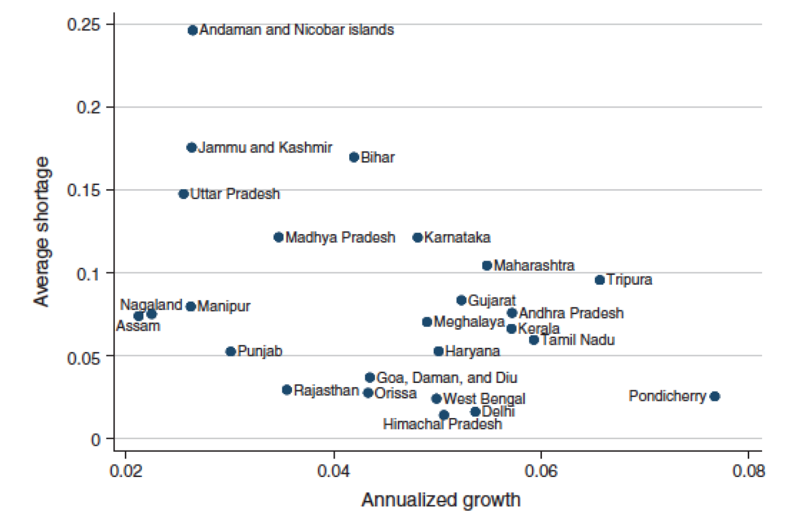
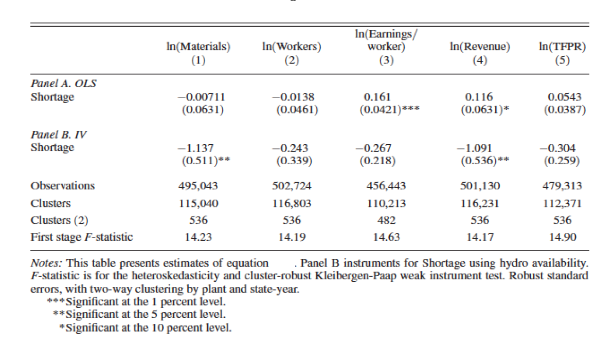

Exam Correction: Parts I & II
Part I — Electricity Shortages and Firm Performance
Allcott, H., Collard-Wexler, A., and O’Connell, S.D. (2016). “How do electricity shortages affect industry? Evidence from India.” American Economic Review
1. Aggregate evidence (1 point)
In Figure 2, Allcott et al. (2016) plot average shortage \(S_{st}\) for each state against annualized per-capita GDP growth over 1992–2010. The correlation is clearly negative. Does this analysis indicate that shortages reduce GDP growth? Why or why not?

No, this correlation does not establish causality. Several sources of endogeneity prevent a causal interpretation:
Reverse causality: Faster-growing states demand more electricity. If capacity cannot keep up with rapid demand growth, shortages are higher in fast-growing states — not because shortages cause slow growth, but because growth causes shortages. This would bias the observed correlation toward zero (or even reverse it), not necessarily produce the negative correlation, but the same logic means the correlation is not informative.
Omitted variables: Geographic, institutional, and historical factors may simultaneously determine both a state’s growth potential and its electricity infrastructure. For example, coastal states may attract more investment (higher growth) and have better energy infrastructure (lower shortages), generating a spurious negative correlation.
Selection / sorting: Productive firms and mobile workers may sort toward low-shortage states, generating a cross-state correlation between shortages and growth that has nothing to do with the causal effect of blackouts on any individual firm.
To establish causality, one needs variation in shortages that is orthogonal to other determinants of growth — which is exactly what the IV strategy in Question 3 attempts to provide.
2. OLS with fixed effects (3 points)
Allcott et al. (2016) estimate by OLS: \[Y_{ist} = \rho S_{st} + \theta_t + \phi_i + \varepsilon_{ist} \tag{1}\] where \(\theta_t\) is a year fixed effect and \(\phi_i\) is a firm fixed effect.
2a. Government capacity building (1 point)
The Indian government has been building electricity capacity nationally, especially in years in which demand is high. Would this government action bias estimates of \(\rho\) in Equation (1)?
No, this does not bias \(\hat\rho\), because the year fixed effect \(\theta_t\) absorbs it.
The key phrase is “nationally”: when the government responds to high aggregate demand by building capacity, the resulting reduction in shortages is common to all states in a given year. This is exactly the kind of national-year variation that \(\theta_t\) controls for. After including year fixed effects, identification of \(\rho\) relies on within-year, across-state variation in shortages — and that cross-state variation is not driven by the government’s national capacity response.
If, however, the government targeted capacity-building at specific states with high demand (state-year variation), then \(\phi_i + \theta_t\) would not fully absorb the endogeneity, and the estimate would be biased. The question specifies a national response, so the year FE is sufficient.
2b. Firm sorting (1 point)
Some firms are inherently more productive, and these firms might endogenously sort into states with low average blackout rates. Would this sorting bias estimates of \(\rho\)?
No, this does not bias \(\hat\rho\), because the firm fixed effect \(\phi_i\) absorbs it.
Sorting based on time-invariant productivity is a time-invariant firm characteristic: a productive firm chose its location once, and that choice is captured by \(\phi_i\). Since \(\phi_i\) is firm-specific and constant over time, it absorbs both the firm’s productivity level and the time-invariant shortage level of its state. Identification of \(\rho\) then relies on within-firm, over-time variation: does the same firm’s output fall in years when its state’s shortage rises? This within-firm comparison is not contaminated by initial sorting.
This would fail only if firms were dynamically re-sorting into states in response to changing shortage levels — but the firm fixed effect cannot control for such time-varying sorting behavior.
2c. Temperature (1 point)
Temperature affects state-level energy demand (via air conditioning) and also firm output (via worker productivity). Would omitting state-specific temperature bias estimates of \(\rho\)?
Yes, omitting temperature biases \(\hat\rho\).
Temperature affects both the regressor \(S_{st}\) (through its effect on electricity demand, which enters the numerator of the shortage formula) and the outcome \(Y_{ist}\) (through its effect on worker productivity). This makes temperature a classic omitted variable that is correlated with both \(S_{st}\) and \(\varepsilon_{ist}\), violating the OLS exogeneity assumption.
The year FE \(\theta_t\) only absorbs the national average temperature in each year, not state-level temperature deviations. The firm FE \(\phi_i\) absorbs the long-run average temperature of each firm’s location. But year-to-year state-specific temperature fluctuations — which simultaneously drive shortage levels and firm output — remain in the error term and bias \(\hat\rho\).
This is precisely why the IV specification (Equation 3) includes state-year controls \(W_{st}\) (which contain rainfall and weather variables): to remove this remaining source of confounding.
3. Instrumental variables strategy (2 points)
Allcott et al. (2016) use water inflows to hydroelectric reservoirs \(Z_{st}\) to instrument for shortage \(S_{st}\). The first stage is: \[S_{st} = \beta Z_{st} + \alpha_t + \phi_s + \varepsilon_{st} \tag{2}\] and the IV regression is: \[Y_{ist} = \rho \hat S_{st} + \gamma W_{st} + \theta_t + \phi_i + \varepsilon_{ist} \tag{3}\]
3a. IV conditions and plausibility (2 points)
Under what conditions does this IV strategy recover unbiased estimates of \(\rho\)? Are these conditions likely to hold?
The IV strategy requires two conditions:
1. Relevance: \(Z_{st}\) must be correlated with \(S_{st}\) after conditioning on state and year fixed effects. This is credible: about 20% of India’s electricity is generated from hydropower, so variation in water inflows directly affects available electricity supply, and hence shortage. The first-stage F-statistics reported in Figure 3 (around 14–15 across specifications) confirm a strong first stage.
2. Exclusion restriction: \(Z_{st}\) should affect firm-level outcomes \(Y_{ist}\) only through its effect on shortage \(S_{st}\), conditional on the controls \(W_{st}\), \(\theta_t\), and \(\phi_i\). This requires that water inflows have no direct effect on firm operations beyond their impact on electricity availability.
Plausibility assessment:
Relevance: likely satisfied, given the substantial share of hydropower in India’s grid and the strong first-stage results.
Exclusion restriction: approximately satisfied, but not without risk. The main concern is that water inflows affect agriculture (irrigation), which could affect demand for manufactured goods and hence firm revenues through channels other than electricity. However, \(W_{st}\) includes rainfall and weather controls that absorb the direct effects of weather on output, and the state and year FEs remove level differences. The residual variation in \(Z_{st}\) after conditioning on \(W_{st}\), \(\phi_s\), and \(\alpha_t\) should be close to orthogonal to firm outcomes through non-electricity channels.
Overall, the strategy is credible but relies on the controls \(W_{st}\) being sufficient to close the agriculture-to-output channel.
4. Interpreting results (4 points)

4a. Revenue effect of a 1 pp increase in shortage (1 point)
According to the IV estimates in Panel B, if shortages increase by 1 percentage point (e.g., from 0.10 to 0.11), by how much does firm-level annual revenue change?
The IV coefficient on \(\ln(\text{Revenue})\) in Panel B is \(\hat\rho = -1.091\). The shortage variable \(S_{st}\) is a share (between 0 and 1), so a 1 percentage point increase corresponds to \(\Delta S = 0.01\).
\[\Delta \ln(\text{Revenue}) = -1.091 \times 0.01 = -0.01091\]
For small changes, \(\Delta \ln(Y) \approx \Delta Y / Y\), so firm-level annual revenue falls by approximately 1.09% in response to a 1 percentage point increase in shortage.
4b. 95% Confidence interval for Panel B, column 4 (1 point)
Compute a rough 95% confidence interval for the IV point estimate on log revenue.
From Panel B, column 4: \(\hat\rho = -1.091\) and \(\text{SE} = 0.536\).
\[\text{95\% CI} = \hat\rho \pm 1.96 \times \text{SE} = -1.091 \pm 1.96 \times 0.536 = -1.091 \pm 1.051\]
\[\Rightarrow \quad (-2.142, \; -0.040)\]
The confidence interval excludes zero (consistent with the ** significance at 5%), and the range is wide, reflecting the imprecision typical of IV estimates with a single instrument and the noise introduced by using hydroelectric variation.
4c. Explaining the OLS vs IV discrepancy (2 points)
The OLS estimate (Panel A, column 4) is \(+0.116^*\) while the IV estimate (Panel B, column 4) is \(-1.091^{**}\). What explains this difference?
The OLS and IV estimates differ dramatically in both sign and magnitude. Two complementary forces explain this:
1. Endogeneity / reverse causality bias (positive bias in OLS)
The shortage variable \(S_{st} = (\text{Assessed Demand} - \text{Energy Available})/\text{Assessed Demand}\) depends on the government’s assessment of counterfactual demand. High-output states have high electricity demand; the government, aware of this, invests more in capacity in high-growth states, pushing Energy Available up and \(S_{st}\) down. This creates a spurious negative correlation between \(S_{st}\) and \(Y_{ist}\) beyond the causal effect — equivalently, a positive bias in \(\hat\rho_{\text{OLS}}\). This can flip the estimated sign from negative (true effect) to positive (OLS).
2. Attenuation bias from measurement error in \(S_{st}\) (further bias toward zero)
“Assessed Demand” is a government-computed counterfactual, not observed directly. It is likely measured with error. Classical measurement error in the regressor attenuates the OLS estimate toward zero. Combined with the positive endogeneity bias, this produces a small positive OLS estimate even though the true effect is large and negative.
IV as a correction
The instrument \(Z_{st}\) (water inflows) is correlated with shortage but driven by exogenous weather, not by government capacity decisions or firm output. By using only the variation in \(S_{st}\) that is due to hydrological shocks, the IV strips out both sources of bias and recovers the larger, negative causal effect.
This pattern — IV larger in magnitude than OLS — is consistent with measurement error being the dominant bias, as discussed in the course context of Acemoglu, Johnson, and Robinson (2001).